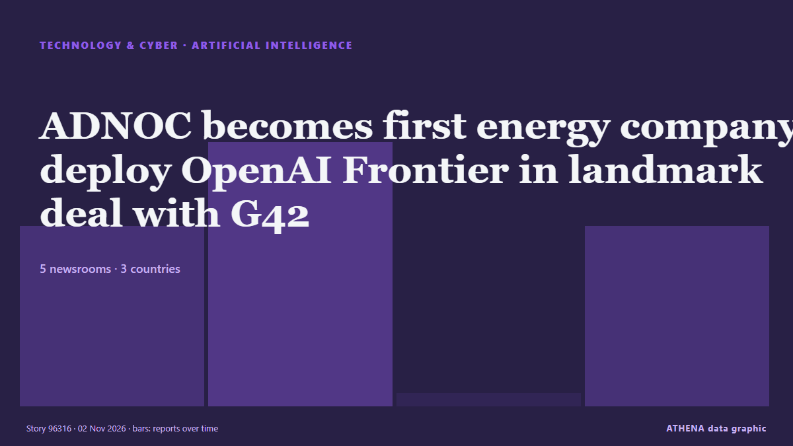

Искусственный интеллект
СпонсорПри поддержке  Cybernetics and Artificial Intelligence Lab Welcome to the Cybernetics and Artificial Intelligence Laboratory, established at the Department of Business Administration of the National
Cybernetics and Artificial Intelligence Lab Welcome to the Cybernetics and Artificial Intelligence Laboratory, established at the Department of Business Administration of the National
| 20 окт. | 0 |
|---|---|
| 21 окт. | 0 |
| 22 окт. | 0 |
| 23 окт. | 0 |
| 24 окт. | 0 |
| 25 окт. | 0 |
| 26 окт. | 3 |
| 27 окт. | 0 |
| 28 окт. | 0 |
| 29 окт. | 4 |
| 30 окт. | 4 |
| 31 окт. | 5 |
| 1 нояб. | 4 |
| 2 нояб. | 4 |
Заголовки приводятся на английском языке, как они были опубликованы.

ADNOC becomes first energy company to deploy OpenAI Frontier in landmark deal with G42
Announced at ADIPEC 2026 in Abu Dhabi, the partnership aims to value crude before extraction and slash oilfield planning times from months to hours. из Arabian Business
(LEAD) Lee vows bold investment in AI, future growth engines to boost growth potential
SEOUL, Nov. 2 (Yonhap) -- President Lee Jae Myung on Monday pledged bold investm... из Yonhap (English)
HSBC to open Hong Kong AI Institute following Singapore launch
The AI unit will work with Hong Kong University of Science and Technology as its anchor academic partner, although the bank's CEO Georges Elhedery did not disclose headcount details. из CNA (Channel NewsAsia)
Europe buys the future, America builds it
Does that matter? A high-stakes transatlantic spat has erupted over GDP figures. из The Economist - Finance & economics
Asia shares bend under AI stress; Apple earnings loom
SYDNEY: Asian share markets slipped on Monday as worries about the sustainability of the artificial intelligence (AI) investment boom loomed over the tech sector, while the high price of oil limited… из New Straits Times
Amazon wants Alexa for Shopping, not Muse, to be how people shop its store
Few people shop through outside AI agents yet, because the experience is not good enough, Amazon chief executive Andy Jassy told analysts on Thursday. из The Next Web
OpenAI Cuts Funding Target by $10 Billion as Investor Jitters Shake AI Markets
OpenAI has cut the target for its current funding round from $30 billion to $20 billion amid investor concerns about the artificial intelligence market, The Financial Times reported Friday (Oct. из PYMNTS
‘Air-con nation’ Singapore eyes alternatives to cool down
Some buildings in the city-state are exploring active chilled beams and radiant cooling to replace compressor units that release hot air into the environment. из Free Malaysia Today
Alibaba partners with Apple to integrate Qwen AI model into Apple Intelligence for Chinese market
Feature to launch with official iOS 27.3 release in December. из Anadolu Agency (English)
Pope says never delegate decisions on weapons and borders to AI
(ANSA) - ROME, 30 OTT - Never delegate decisions on weapons and borders to Artificial Intelligence, Pope Leo XIV said Friday. из ANSA English
In China, the AI bubble has already burst
Lofty valuations collapse under worries about AI demand and curbs on Chinese exports. из Express Tribune
Samsung execs meet Open AI's Sam Altman to discuss AI transformation
SEOUL, Oct. 31 (Yonhap) -- Top executives from key Samsung affiliates met with O... из Yonhap (English)
AI giants promise publishers new way to block some scraping
Publishers are facing a surge in bots that scrape their articles to feed AI models. из The Straits Times
Dartmouth provost resigns over AI use in published articles
Dartmouth College Provost Santiago Schnell resigned Wednesday after a faculty-led investigation concluded he used artificial intelligence (AI) to substantially alter his published writing, violating… из VnExpress International
Reddit will make users log in as Google’s AI search cuts its traffic
Reddit is moving to a “logged-in-only experience”, chief executive Steve Huffman told shareholders on Thursday. из The Next Web
Cash is king as investors draw new battle lines in AI spending boom
Microsoft shares rose more than 3% in after-hours trading, while Alphabet plunged nearly 10%, as investors favoured companies profiting from AI over those struggling to contain its costs. из Free Malaysia Today